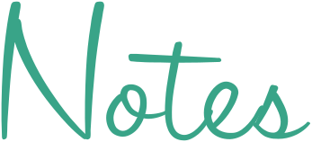
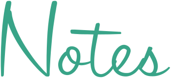
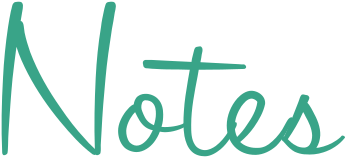
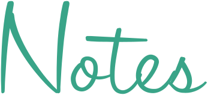

I first started working on a new draft of my portfolio in 2011. I haven't been working on this update for two years, but I have been coming back to it ever few months. It's undergone countless iterations.
Why has it taken so long? I've been afraid to commit to any one idea. It seemed like when I would decide upon a certain direction, the web would up and change its game (think responsive design). This was more down to me taking my sweet time more than anything else.
Not that I'm complaining. It practically became a hobby of mine to tinker with a new portfolio. In a way I'm a little sad that the sketching / prototyping / designing / coding elements of the portfolio are ultimately finished, but I'm excited to add some flourishes in the coming weeks and months (I've been toying with snap svg which I'm looking forward to integrating).
In the next few weeks I'm also going to write about the decisions I made while building out this site - inspiration, evolution, content management, execution. Hopefully it may be of some use to those starting out with building their first portfolio - maybe help shave a year or two off it here and there!
If you have a project that you want to get started,
think you need my help
with something or just fancy saying hey, then get in touch.